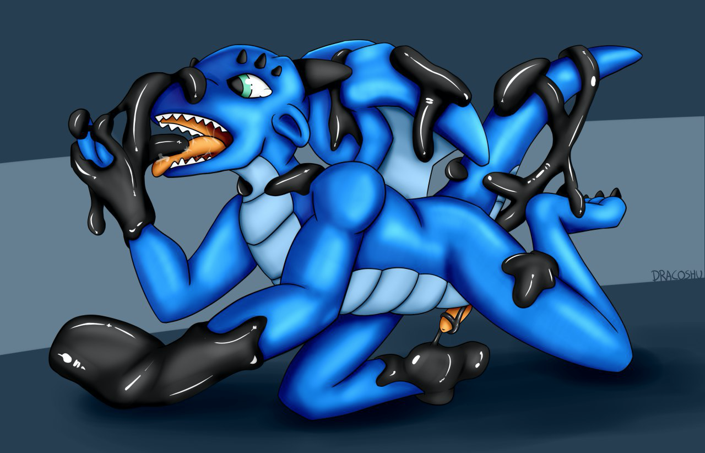
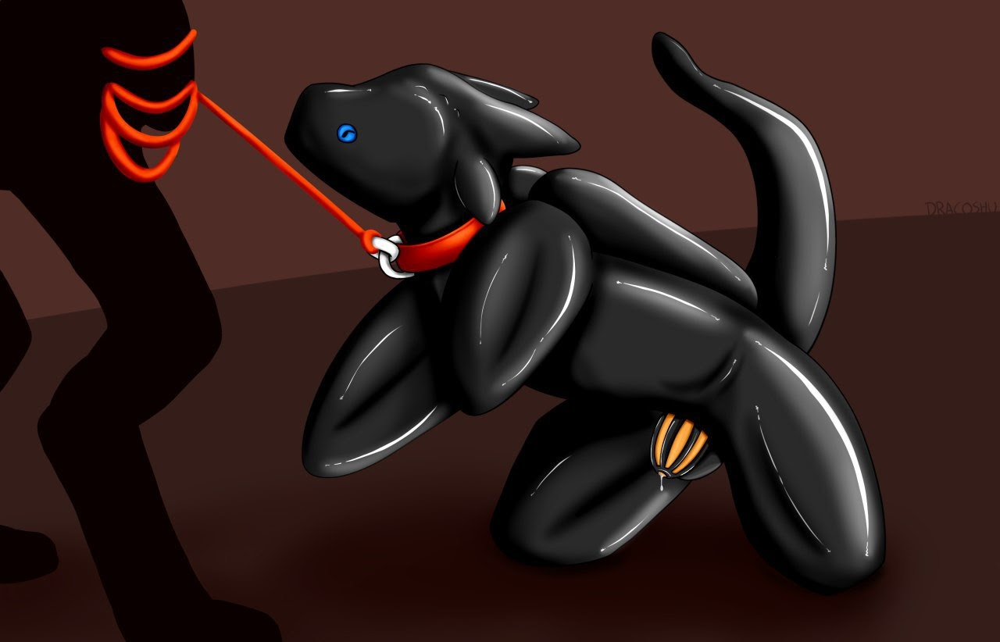

Preparing the New Pet
Written by TwistedSnakes
Illustrated by Dracoshu
Shit. I've been...kidnapped or something. I'm not sure. I was a little tipsy when I left the bar last night, but I'm definitely sober now in the boot of my captors' car. It's dark, it's unpleasantly warm, and it's a bumpy ride.
The ropes around my wrists and ankles did nothing to help my situation, pulling my body into a hogtie position. A cloth was stuffed into my mouth and a muzzle clamped my maw around it, making sure I couldn't call for help. But even without the gag, I'd find it difficult to call for help: my mouth is dry from alcohol dehydration, and a throbbing headache is plaguing my mind.
I'm not sure how long I've been here. It was night when I was attacked, bound, and chucked into the boot of a getaway car, but judging by the noise of the traffic outside, it's probably daytime by now. My captors sure are taking me far away from here, which means that nobody's going to know where to look for me.
Fuck.
I can hear the sounds of other cars die down. They're probably taking me down some deserted road. Not a good sign.
An hour or so passes before the car stops. The engine turns off, the car doors open, and I hear footsteps coming around. Then the car boot opens. My eyes try to get used to the blinding light, but soon enough I catch a glimpse of my captors: a shark and a tiger.
"Mfft!" I protest angrily. Deep inside, I'm really, really scared, but I can't show them that.
"Fiesty one, isn't he?" the shark commented in a gruff voice with a smirk plastered across his face.
"Fiesty ones are more troublesome to train," the tiger rolled his eyes, "I don't know why you still like them."
"It's fun to break their spirits," the shark chuckled, "Strong-willed people reduced to obedient pets. Mmm..."
"Hfft!"
This isn't a regular kidnapping! What are they going to do to me?
The shark picks me up and throws me effortlessly over his shoulder. As they close the boot and lock the car, I look around. As far as I can tell, I'm in a warehouse or factory of sorts. There is a high ceiling with exposed pipes and wires running across steel beams. The grimy fluorescent lights flicker on as the tiger turns on the switches in a corner of the large room. A machine, about as high as a person, sat in the centre of the room surrounded by metal cages.
I don't like the look of this, and I'm sure to inform the shark of that as I squirm within my bonds and grumble from behind my gag, but that only elicits another chuckle from him.
Gah!
The shark brings me in front of the machine, and I get a bad feeling about it. I'm tossed on the floor and I land hard on my shoulder.
"Grfh!" I let out a yelp of pain.
The tiger joins us, cutting the ropes to my hogtie. This is my chance. I should be running free. But the impact of the fall has left me in pain and my limbs are still numb from the hours spent locked in the car. Instead, all I can manage is a groan as I try to gather strength to move my body.
"Where do you think you're going?" the shark grinned, placing his foot on my chest and pinning me down. He clenched his claws, digging them into my skin. "You're not going anywhere."
"Grr..." His claws are sharp.
"Hey, stop toying with him," the tiger grunted, "We have an order to fill." He walked over to the machine and pulled a handle on its side. A panel opened up, revealing a dark chamber within the machine.
"Don't get your jockstraps in a bunch," the shark grinned.
"Shut up," the tiger sighed back, "Just take off his clothes, chuck him in, and let the machine do its job."
"Of course," the shark takes his foot off my chest and crouches beside me. With a swift motion, he rips my shirt off me. My pants and underwear follow, leaving them tattered along with the remains of my dignity.
G-gah!
He picks me up again. This time, he carries me over to the machine and shoves me unceremoniously into its chamber.
I land on the cold metal floor with a loud clang. My shoulder hurts again, and my vision goes hazy with the pain. By the time I've come to my senses, the panel has already been closed. Banging my fists on the panel doesn't help: it had been latched from the outside, leaving me trapped in here in pitch blackness once again.
I try and feel the space around me. The ceiling is so low I can't stand up straight. There's barely enough space for me to be on all fours, so I make do with the room I'm given.
What is this machine anyway?
I don't like this.
But I can't do anything about it as the machine hums to life. The shark must've turned it on. I feel humid air blow into the chamber, and suddenly something hits me on my back. My hand reaches behind to feel it, only to have my fingers grab a fistful of thick, gooey gunk.
Fuck! What's this?
I try to wipe it off me, but my actions only spread the weird liquid across my back and onto my hands.
Ugh.
It feels thick and sticky. Just...just like...liquid latex?
More of it is coming from the ceiling of the chamber, drenching my scales with its rubbery exterior.
"What's this?" I shout, banging again on the metal walls of the machine, "Help!" I hear a chuckle from the outside of the machine.
Fuck.
The liquid seems to have a mind of its own, spreading across my body through thick, sticky tendrils. They grab and grope at my body, trying to encase every inch of exposed skin.
Is latex supposed to do that? Unless this is some kind of special technology, and I'm about to find out what it can do. A tendril reaches around my rump and...
"Hey, wait, no!" I try to reach around to pull it off me, but the sticky latex on my hands had adhered them to the ground. In the meantime, something round nudges against my vulnerable pucker, threatening to thrust its way in.
Sure enough, it does. "Ahh–fhgt!" a phallic shape forces itself into my mouth as I protest the rear intruder, gagging me with the foul-tasting latex. I feel the penis gag in my mouth, filling out my maw with its girthy shaft.
"Mfft!"
What's the latex doing to me?

The viscous liquid coats my chest and abs, spreading down my arms and legs before fixing my hands and knees onto the ground. It gradually hardens, forming a latex skin around me. The warm air blows against the rubber, causing it to shrink and warp. The latex on my arms pulls my wrists back, forcing them firmly against my shoulders so that I have to use my elbows to support the front of my body. My ankles are pulled back too, pressing my heels against my rump.
I stumble about in the dark. My wings and tail are getting coated in the pouring latex, making them feel heavy beneath the weight of the viscous fluid. In the same way, the latex tightens, pulling my wings in so they are painfully pressed against my back.
At the same time, the latex in my maw spreads up my face, threatening to enter my eyes. I close my eyes tight, feeling the liquid creep over them and encase the entirety of my head, leaving only breathing holes for me to maintain consciousness.
It dries and tightens, pressing against my facial features without revealing how I look like inside. The pressure forces the gag deeper into my maw, and I can feel the same happen for my latex-coated rump, shoving the dildo deeper into me.
"Nffhtt!" I protest. I'm covered in the latex that's enclosing all of my body. Well, almost all. A latex tendril is grasping around my quivering member. "Ffftt!"
Please, no. Not my cock.
But it wraps around my member without hesitation, groping and grasping, stroking and teasing.
Fuck, I'm getting hard.
But instead of encasing my cock in a layer of latex, it seems to be forming bars that run lengthwise down my shaft, as if caging it up.
Wait, a cage? Was it forming a chastity device?
Sure enough, a cage made of solid latex forms over my dick, making a full erection impossible and painful.
Crap...
I shuffle around in a panic, wondering what's happening to me. What's going on? Why are they subjecting me to this?
The flow of rubber from the ceiling stops and the excess latex drips off me, leaving me behind in a sort of form-fitting suit forming my second skin. I'm like a rubber gimp trapped in a seamless bitchsuit keeping me on my fours.
I hear the hum of the machine die down, leaving me panting in silence, scared and blind to what's going on about me. I hear the panel open, but the latex suit isn't letting me see any light whatsoever.
I stumble towards the source of the sound, struggling to escape. But there's a click as a sort of strap is cuffed around my neck.
A collar!
Then a leash is clipped on and I feel a tug on my neck.
"Mfnght!"
"Come along pet, let's take you to your new life."
"Nggrr?"
"Life as a permanent pet."

~ End ~